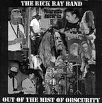

| Artist: | Rick Ray Band |
| Title: | Out Of The Mist Of Obscurity |
| Label: | Neurosis Records |
| Length(s): | 55 minutes |
| Year(s) of release: | 2003 |
| Month of review: | [11/2003] |
| 1) | Why Did I Know | 2.44 |
| 2) | Death Of The Swineherd | 5.12 |
| 3) | Ripples In The Pond | 5.26 |
| 4) | Out Of The Mist Of Obscurity | 8.39 |
| 5) | Trying Too Hard | 4.09 |
| 6) | Reflection | 3.07 |
| 7) | The Eyes Of God | 4.54 |
| 8) | Demons And Men | 8.35 |
| 9) | Waiting | 3.36 |
| 10) | Under A Spell | 3.58 |
| 11) | A Willing Servant | 4.49 |